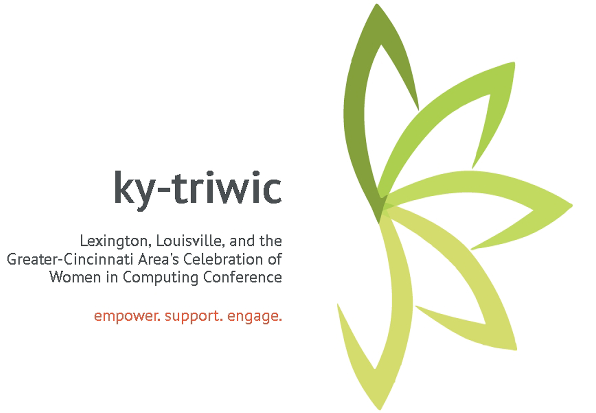
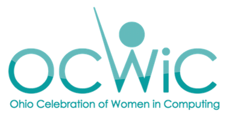

Grace Hopper Celebration of Women in Computing
The Grace Hopper Celebration of Women in Computing (GHC) is the World's Largest gathering of Women Technologists. It is produced by the Anita Borg Institute and presented in partnership with ACM. To read more about GHC, visit their website
ACM-W Executives will be attending the conference this year! All of the experiences and information learned will be shared with ACM-W members shortly after the conference.
Date: October 14th - 16th, 2015
Location: Houston, Texas
GHC 2014: ACM-W also attended GHC last year, held in Phoenix, Arizona. Click here for a glimpse into the activities last year.

KY-TRIWIC
Ky-triwic is Lexington, Louisville and Greater-Cincinnati Area's Celebration of Women in Computing Conference. To read more about ky-triwic, visit their website
Date: February 2016
Location: Northern Kentucky University
How to get involved:You will be eligible to attend with ACM-W as long as you attend atleast 5 general meetings before the conference.

Ohio Celebration of Women in Computing
OCWiC is an opportunity for young women to explore careers in IT, to network with other young women and to meet possible mentors. OCWiC hopes to encourage women to complete their studies in computing by exploring careers and meeting women leaders from business, industry and academia. To read more about OCWIC or to attend, visit their website
Date: TBD
Location: Sawmill Creek Resort, Huron, OH
Note: ACM-W will NOT be attending this conference this year.